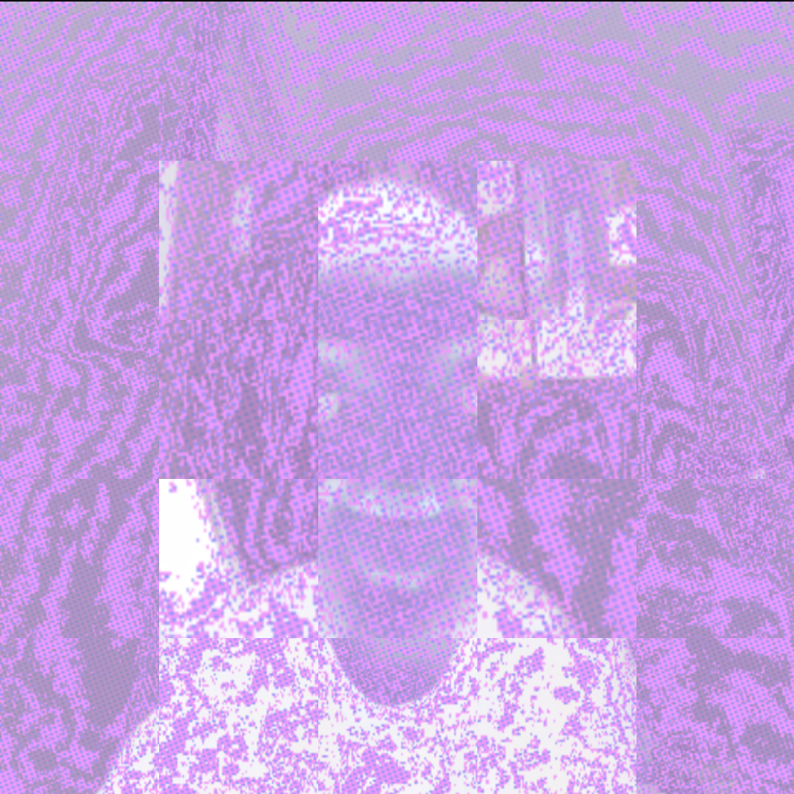
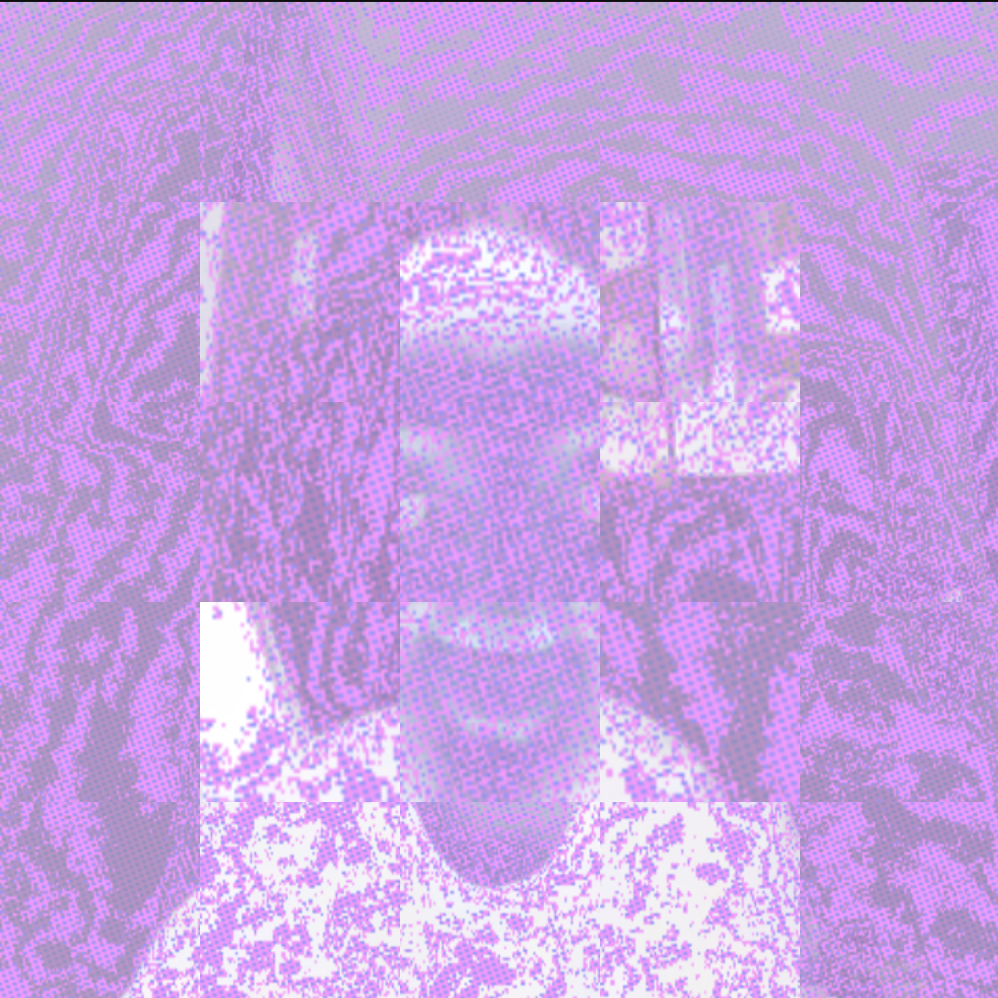

Mac Sanmiguel
For my final project, I want to make a web app that can be accessed through the internet on a computer or touch screen device (i.e. a phone or tablet). This app will be a combintation of a digital art canvas and musical instrument. I plan to accomplish this by using the p5.js framework, utilizing the p5.sound library (which is missing from the new documentation page for some reason) and potentially utilizing the tone.js framework.
What will the app do?
In terms of the user interface, I created a little sketch you can see on this page of what it will roughly look like. There is a large main area aka the "canvas" that the user will be able to interact with. There are two modes that the canvas can be interacted with, being draw mode and synth mode. In draw mode, the user can choose from a selection of colors, brush size, and opacity in the "pallate" and draw on the canvas area using the mouse (or finger.) Once the user is satisfied with what they have created, they can switch into synth mode. In synth mode, the user is now able to use the mouse to hover over and click on the canvas, but instead of drawing, what had previously been drawn on the canvas will be used as an input to generate music as the user interacts with the page.
How will I do this?
p5.js has a lot of very useful functions and variables that I will use to my advantage in creating this project. Most importantly, I will be using the mouseX and mouseY variables to easily track where the user is hovering the mouse, then a mouseClicked function to draw the "paint" on the page (i will have to figure out how to make this touch responsive too.) Additionally, I can use the distance function to determine which part of the pallate the user is interacting with. Getting the "drawing" effect working on my app will be easy, using the draw function and line function in tandem with the mouseX and Y parameters. In the synth mode, using "get" will allow me to detect what color is under the mouse cursor, which I can use to run different functions depending on the color the user is hovering over. There are also some base javascript elements like for loops, conditionals, and arrays will help me with other aspects of the app. Because the app will have a synth and a draw mode with different sets of interactions, it will be necessary to be able to switch between these modes. I plan on using a for loop and conditional statements to create two different "states" that can be switched between. Additionally, I will be able to create functions that can be put in conditional statements that can be called from when specific criteria are met (like if the color under the mouse is red.) I want to try and utilize object-oriented-programming as much as possible and creat functions with custom parameters, so I can make an app that is very unique and interactive.
 
